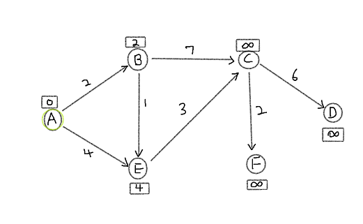
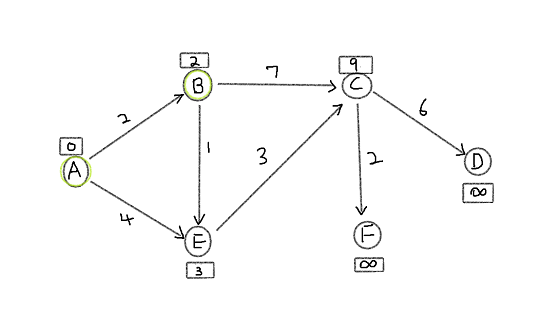
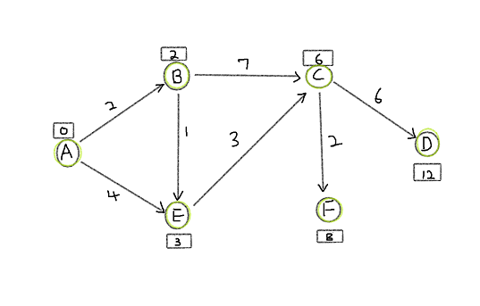

date posted: 2020-02-16
You would probably guess what this algorithm is all about... Yes it is finding shortest path that
takes you from one place to another but it can be done if the graph is
directional acyclic graph. If it is undirected graph you could make it directional
by replacing undirected edge with two directed edge going in opposite direction.
All of the readers probably benefit from this algorithm in
everyday lives when using google map, kakao map to get from current place to another those maps perform
shortest path algorithm.
There are two different types of shortes path algorithm
When you are using single source shortest path algorithm you will know all distance from your starting position to all vertices however you won't know distance between any other pairs of vertices if one of them is not a starting vertex.
In all-pairs shortest path you will know all distance between any pairs of vertices in a graph. So you would know distance going from A-B, B-C, A-C and so on.
There are two main algorithms that belong to single source shortest path algorithm. Dijkstra algorithm named after Edsger Dijkstra, Bellman-Ford was names after Richard Bellman it is said that this algorithm was first proposed by Alfonso Shimbel in 1955 however Richard Bellman published it in 1956 and Edward F. Moore published the same algorithm in 1957 thus sometimes called Bellman-Ford-Moore algorithm.
Dijkstra is used when graph is acyclic directed graph with all positive edge weights if graph is undirected you must change it to directed graph by replacing undirected edge with two directed edges going in opposite direction. It does work on edges with negative weights however most of the times it will fail. We will perform Dijkstra algorithm on example with all positive edge weights then on example with negative weight edge to show why it is not suitable.
Dijkstra algorithm follows these steps below:
1. Set vertex A as starting vertex, find shortest paths. It has two directly connected vertices B and E therefore distance from A-B is 2 and A-E is 4. All other vertices are not directly connected therefore distance from A are infinite.
2. Vertex with smallest distance from starting vertex is B. Now look at B's directed connected vertices and perfrom relaxation that is
if (d[u] + w(u,v) < d[v]):
d[v] = d[u] + w(u,v)
where u = current vertex cost and w(u,v) = cost of u-v edge.
Vertex B has outgoing edge B-E. E already has a distance from starting point that is d[E] = 4. Since d[B] = 2 and
w(B, E) = 1, d[E] < d[B] + w(B,E) is satisfied and vertex E is relaxed to cost 3.
Similarily d[C] = infinity and d[B] + w(B,C) = 9 so d[C] is relaxed to 9.
Now we look at E and C. Out of the two E has smaller cost therefore choose E. It has only one outgoing edge to C thus perform relaxation and C is relaxed from 9 to 6. Finally lowest cost vertex is C since F and D have infinite cost. Since both F and D are infinite they are both relaxed to 8 and 12 respectively.
Now we have all shortest paths from vertex A to all other vertices. We have just used dijkstra algorithm to find single source shortest path.
In our example all of our edges had positive weights what happens if there are negative weight edges?
Book I am reading "뇌를 자극하는 알고리즘" only covers Dijkstra algorithm however as I was seaching the internet about things I was curious about it made this blog too long... I will split it into two parts, part II consisting all-pairs shortest path algorithms -> Continue straight to part II